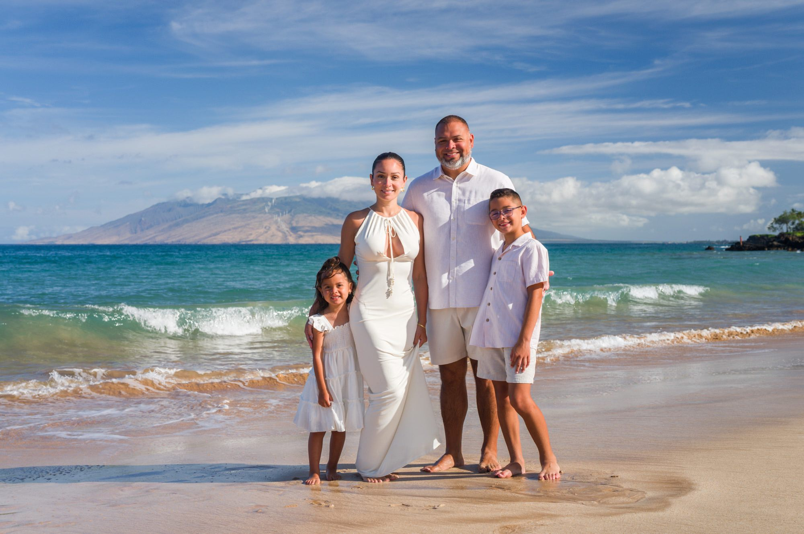

Cooler · Quieter · Soft light
Morning
Easygoing light, calmer beaches, and happy early risers. A natural fit for young children—and for families still waking up on mainland time.
Explore the morning session
Wailea, Maui · From $299
A relaxed Maui portrait session that fits into your vacation—with 25+ naturally edited photographs delivered in 24–48 hours.
The Maui Mini difference
No marathon photoshoot. No complicated packages. We’ll guide you gently, keep children moving, and make the whole thing feel more like twenty minutes together at the beach than twenty minutes posing for a camera.
Choose your session
Every option is $299 and includes the same relaxed direction, 20 minutes of photography, and 25+ high-resolution images. The only decision is your favorite light.
Cooler · Quieter · Soft light
Easygoing light, calmer beaches, and happy early risers. A natural fit for young children—and for families still waking up on mainland time.
Explore the morning session


Warm · Cinematic · Classic Maui
Golden color, ocean movement, and the chance of a dramatic island sky. The iconic Maui look, timed around the evening light.
Explore the sunset session



Vivid · Tropical · Blue water
Bright ocean color and a breezy daytime feeling. Choose this when the blue water and tropical landscape are the heart of your Maui memory.
Explore turquoise-water photographyPrices include up to five people. Additional family members can be added during booking.
Read recent reviews“From start to finish, the experience was absolutely amazing.”
More Maui moments

Family-run on Maui
Maui Mini Session is the express portrait experience from the Balter family, who have photographed life on Maui for more than 25 years. Your session is photographed by our own team with the same care we would want for our family.
Meet your photographersPlan with confidence
Good to know
Choose comfortable pieces in soft neutrals, white, cream, sky blue, or muted earth tones. Linen, cotton, and flowing fabrics move beautifully. Bare feet are usually best once we reach the sand.
They don’t need to. We keep the session moving with simple direction, play, and natural interaction. The short format is especially well suited to children.
You may reschedule before your session if Maui weather isn’t cooperating. Conditions change quickly, and your photographer will help you make a practical call.
Your online gallery of at least 25 naturally edited, high-resolution images is delivered within 24 to 48 hours.
We photograph at carefully selected shoreline locations in Wailea and South Maui. Your exact meeting details arrive after booking.
Maui Mini Session offers 20-minute family photo sessions at selected shoreline locations in Wailea and South Maui, convenient for guests staying near Grand Wailea, Four Seasons Resort Maui at Wailea, and other Wailea resorts. Sessions start at $299 and include at least 25 edited photographs delivered in 24–48 hours. Maui Mini Session is an independent photography business and is not affiliated with these resorts.